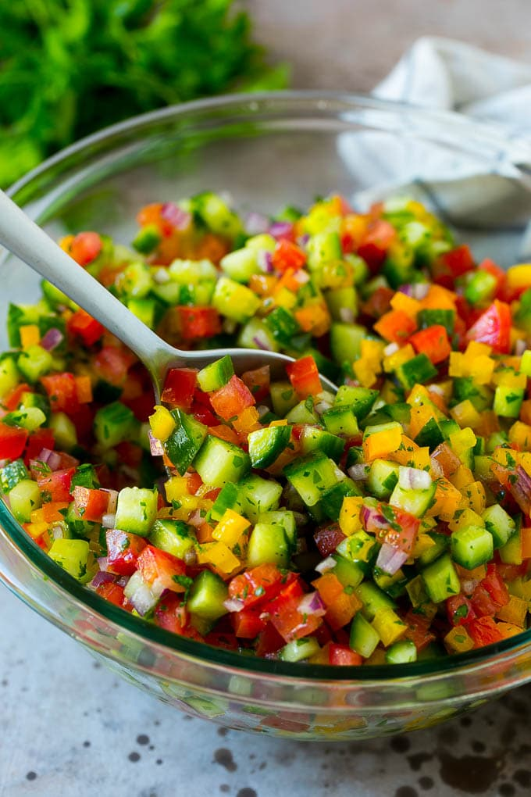

Israeli Salad!!!
Ingredients
- 1 english cucumber
- 1 large carrot
- 1 cup cherry tomatoes
- 1 jalapeno
- 1 red or green bell pepper
- 1 shallot or small onion (optional)
- 1 cup kalamata olives
- 1/2 cup fresh minced parsley (optional)
- 1 lemon
- 1 tablespoon olive oil
Steps
- Dice the cucumber, carrot, tomatoes, jalapeno, pepper, and shallot.
- Cut olives into halves or quarters.
- Toss together with juice of lemon, parsley, and olive oil.
- The acids from the lemon and tomato will marinate the other ingredients with time, so best when prepared a day or two before eating.